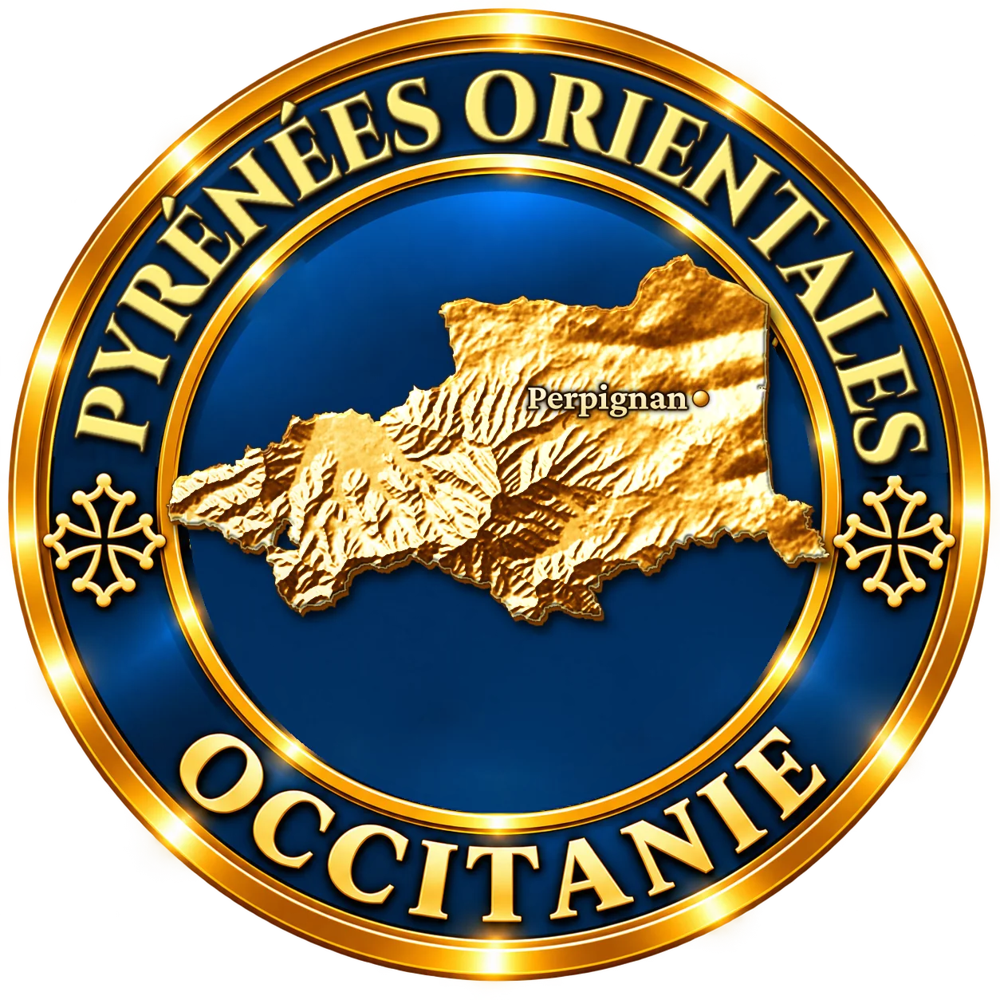
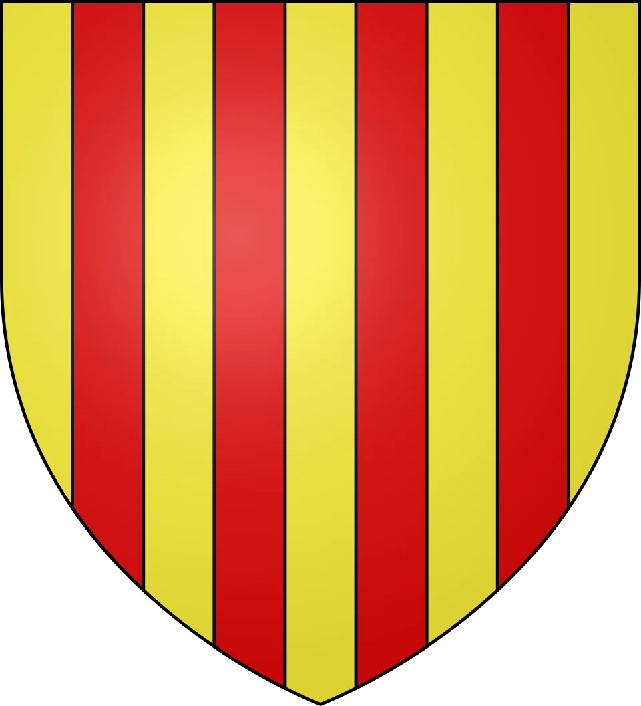
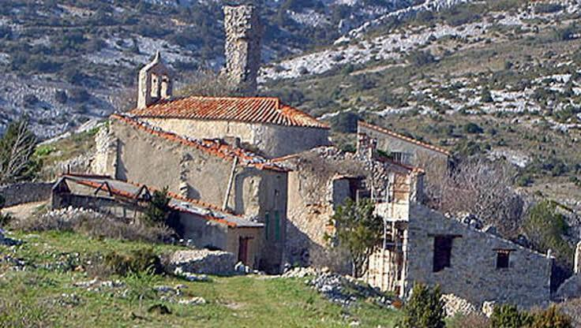
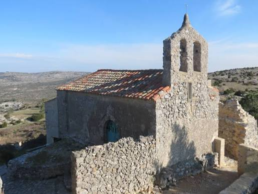

Au bout de dix kilomètres de route étroite dans la garrigue, un village de pierre sans un seul habitant. Le dernier est parti en 1978. De ce hameau perdu des Corbières est pourtant sortie une famille qui a donné des vicomtes, un amiral, un archevêque, un vice-roi, un Grand Maître de Malte, et un chevalier parti en Irlande chercher l'entrée de l'au-delà.
Périllos, Perellós en catalan, se cache sur un plateau calcaire des Corbières, au nord de Perpignan, à quelques kilomètres de la limite de l'Aude. Pendant des siècles, ce fut une frontière : ici s'arrêtaient les terres catalanes. Le château de Périllos, dont il reste une tour carrée et une partie de l'enceinte, est d'ailleurs considéré comme le château médiéval le plus septentrional du monde catalan.
Le nom viendrait du vieux catalan perellons, « petites poires », et les armes des seigneurs du lieu portaient des poires. Vers 1100, la seigneurie est tenue par un certain Ramon Seguer de Perelons. L'église Saint-Michel, en partie romane, apparaît dans un texte de 1215 : un seigneur y cède les droits de pâture des paroisses de Saint-Michel de Périllos et de Saint-Laurent d'Opoul.

Au XIVe siècle, la petite seigneurie connaît une ascension spectaculaire. Ses seigneurs entrent au service des rois d'Aragon, puis de France. En 1366, Francesc de Perellós est fait vicomte de Rueda en Aragon ; deux ans plus tard, il devient amiral du roi de France Charles V. Un autre Perellós, Miquel, est archevêque d'Embrun pendant près de cinquante ans. En 1391, le roi Jean Ier d'Aragon accorde à Ramon de Perellós le titre de vicomte de Perellós : le hameau des Corbières devient le siège d'une vicomté.
Ramon est un proche du roi Jean Ier. Quand celui-ci meurt brusquement en 1396, le chevalier s'inquiète du sort de l'âme de son maître. Pendant l'hiver 1397, il part pour l'Irlande, jusqu'au Purgatoire de saint Patrick, une grotte sur une île du lac Derg réputée ouvrir sur l'autre monde. À son retour, il écrit le récit de son voyage, qui deviendra un texte célèbre de la littérature catalane médiévale. Il y raconte sa descente dans le Purgatoire et sa rencontre avec l'âme du roi.
Un seigneur d'un village de garrigue qui traverse l'Europe en plein hiver pour savoir si l'âme de son roi est sauvée : c'est peut-être la plus étrange des histoires de clocher.
Le village, lui, reste un petit lieu de bergers et de vignerons, au bout de tout. Au début du XIXe siècle, l'église a perdu son statut de paroisse et dépend d'Opoul. Les familles partent les unes après les autres vers la plaine. En 1971, la commune de Périllos est rattachée à sa voisine, qui prend le nom d'Opoul-Périllos. En 1978, Aimé Pujol, surnommé « Aymanet », né à Périllos, quitte à son tour le village : il en était le dernier habitant.
Depuis, les toits sont tombés, mais les rues, l'église, le cimetière et la chapelle Sainte-Barbe sont toujours là. Chaque été depuis plus de dix ans, les bénévoles de l'association Terre de pierres travaillent à sauver les murs.

Peu de villages de cette taille peuvent revendiquer une telle descendance. Pendant quatre siècles, le nom de ce plateau aride a été porté à la cour d'Aragon, à Paris, en Sicile et jusqu'à Malte.
Sur la place de l'église, deux plaques commémoratives rappellent le voyage de Ramon de Perellós au Purgatoire de saint Patrick. L'Irlande et ce village désert des Corbières restent liés par ce récit.
Le récit du vicomte a nourri une légende tenace : il existerait, sur ou sous les terres de Périllos, des passages vers l'au-delà. Elle n'a jamais cessé de circuler.
L'église Saint-Michel a été en partie reconstruite : seule l'abside est vraiment romane, et la nef réemploie des pierres plus anciennes. On s'interroge aussi sur une salamandre sculptée, aujourd'hui disparue.
Aimé Pujol, né à Périllos, a été le dernier habitant du village. Il est parti en 1978. Le dernier berger, Alain Estanouse, était lui aussi d'une famille originaire de Périllos.